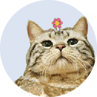

Struktura i zawartość dokumentów w typowym systemie zarządzania jakością w zakładzie produkcyjnym.
Pytanie ma dwie części: strukturę dokumentacji systemu zarządzania jakością (SZJ) i jej zawartość w zakładzie produkcyjnym. Materiał do zagadnienia w folderze to 2-stronicowa notatka studencka:
Strona trzyma się jej układu i uzupełnia go wymaganiami normy ISO 9001 o „udokumentowanej informacji”. Wszystkie przykłady dotyczą jednego wyrobu — stalowej tulei toczonej w zakładzie — żeby było widać, jak jeden wymóg schodzi przez kolejne poziomy.
Dokumentacja SZJ, zwykle oparta na ISO 9001, ma strukturę piramidy. Na górze jest polityka jakości i księga jakości, czyli dlaczego i w jakim zakresie. Pod nią procedury: kto, co, kiedy i gdzie. Dalej instrukcje i specyfikacje: jak dokładnie wykonać zadanie. Na dole zapisy: dowód, że zrobiono to zgodnie z wymaganiami. Norma rozróżnia dokumenty, które się utrzymuje i aktualizuje, od zapisów, które się zachowuje bez zmian. Wszystkie podlegają nadzorowi: numer rewizji, zatwierdzenie i wycofanie nieaktualnych wersji.
| człon odpowiedzi | co trzeba powiedzieć |
|---|---|
| podstawa | ISO 9001; „udokumentowana informacja”; dokument a zapis |
| struktura | piramida: polityka i księga → procedury → instrukcje i specyfikacje → zapisy |
| zawartość | co jest na każdym poziomie; co norma wymaga obowiązkowo |
| przykłady z produkcji | nadzór nad sprzętem pomiarowym, wyrób niezgodny, plan kontroli, instrukcje stanowiskowe, raporty 8D |
| nadzór | rewizja, zatwierdzenie, dystrybucja, wycofanie starych wersji |
System zarządzania jakością to sposób, w jaki zakład planuje, wykonuje, sprawdza i poprawia swoją pracę, żeby wyroby spełniały wymagania klienta. Najczęściej buduje się go według normy ISO 9001 i potwierdza certyfikatem jednostki zewnętrznej. Dokumentacja jest jego „kręgosłupem”: zapisuje ustalone sposoby działania i dostarcza dowodów, że się ich trzymano.
Norma od wydania z 2015 roku nie mówi już o „dokumentach i zapisach”, tylko o udokumentowanej informacji w dowolnej postaci, także cyfrowej (system MES, ERP, tablet przy maszynie). Rozróżnia jednak dwa jej rodzaje, i to rozróżnienie warto znać:
| dokument | zapis | |
|---|---|---|
| sformułowanie w ISO 9001 | „utrzymywać udokumentowaną informację” | „zachowywać udokumentowaną informację” |
| odpowiada na pytanie | jak ma być? | jak było? |
| zmiany | aktualizuje się go kolejnymi rewizjami | nie zmienia się po wypełnieniu |
| przykład | polityka, procedura, instrukcja, rysunek | karta kontroli, świadectwo wzorcowania, raport z auditu |
ISO 9001:2008 wymagała księgi jakości i sześciu udokumentowanych procedur: nadzoru nad dokumentami, nadzoru nad zapisami, auditów wewnętrznych, nadzoru nad wyrobem niezgodnym, działań korygujących i zapobiegawczych. Wydanie 2015 zniosło oba obowiązki. Organizacja sama decyduje, ile dokumentacji potrzebuje, a większość zakładów i tak je zachowuje. Najnowsze wydanie, ISO 9001:2026 (opublikowane 16 września 2026), utrzymuje te zasady i strukturę rozdziałów. Dokłada nacisk na kulturę jakości, szanse i ryzyka oraz zarządzanie zmianą. Firmy certyfikowane mają trzy lata na przejście.
Dokumentacja jest ułożona hierarchicznie, od ogólnej wizji zarządu po konkretny formularz wypełniany przez operatora na nocnej zmianie. Każdy poziom odpowiada na inne pytanie, ma innego czytelnika i jest wyprowadzony z poziomu nad nim. Im niżej, tym więcej szczegółów i dokumentów.
| poziom | typ dokumentu | zawartość |
|---|---|---|
| 1 · strategia | polityka jakości, księga jakości | polityka — deklaracja zarządu o celach jakościowych; księga — mapa systemu: zakres SZJ, mapa głównych procesów, ewentualne wyłączenia z normy |
| 2 · organizacja | procedury systemowe | kto, co, kiedy i gdzie ma zrobić; współpraca między działami, np. przepływ informacji między magazynem a produkcją |
| 3 · działanie | instrukcje i specyfikacje | jak dokładnie wykonać konkretne zadanie; dla operatorów maszyn i kontrolerów jakości |
| 4 · dowody | zapisy i formularze | obiektywny dowód, że pracę wykonano zgodnie z procedurą; po wypełnieniu (np. wynik pomiaru z datą) nie wolno ich zmieniać |
treść tabeli wg notatki do zagadnienia
Norma nie podaje listy dokumentów. Rozsiewa po rozdziałach wymagania „utrzymywać” albo „zachowywać” udokumentowaną informację. Najważniejsze z nich, przypisane do poziomów piramidy (numeracja wg ISO 9001:2015, wydanie 2026 zachowuje strukturę rozdziałów):
| poziom | wymaganie | punkt normy |
|---|---|---|
| 1 | zakres systemu zarządzania jakością (z uzasadnieniem wyłączeń) | 4.3 |
| polityka jakości i cele jakości | 5.2, 6.2 | |
| 2–3 | informacja potrzebna do prowadzenia procesów — w zakresie, który organizacja uzna za konieczny | 4.4, 8.1 |
| 4 | dowody wzorcowania i sprawdzania przyrządów pomiarowych | 7.1.5 |
| dowody kompetencji pracowników | 7.2 | |
| wyniki przeglądu wymagań klienta, ocena dostawców | 8.2.3, 8.4 | |
| dowody zgodności wyrobu i osoba zwalniająca go do wysyłki | 8.6 | |
| opis niezgodności, podjęte działania, decyzje | 8.7, 10.2 | |
| wyniki monitorowania, auditów wewnętrznych i przeglądu zarządzania | 9.1, 9.2, 9.3 |
Widać z tego, że norma jest oszczędna w dokumentach, a wymagająca w zapisach. Audytor nie pyta, czy jest procedura, tylko prosi o dowód, że proces działa.
Komisja zwykle oczekuje konkretnych przykładów z hali. Notatka wymienia pięć najważniejszych:
| dokument | poziom | po co i co zawiera |
|---|---|---|
| procedura nadzoru nad sprzętem kontrolno-pomiarowym | 2 (+ zapisy) | gwarantuje, że przyrządy podają prawdziwe wartości: harmonogram kalibracji, świadectwa wzorcowania dla każdej suwmiarki czy wagi |
| procedura nadzoru nad wyrobem niezgodnym | 2 | jak fizycznie i systemowo odizolować wadliwe detale (np. czerwone pojemniki z kłódką), żeby nie trafiły do klienta; kto decyduje o naprawie, złomowaniu albo odstępstwie |
| plan kontroli (Control Plan) | 3 | jakie cechy wyrobu, jakim przyrządem, jak często i z jaką tolerancją sprawdzać na poszczególnych etapach; wymagany m.in. w motoryzacji (IATF 16949) |
| instrukcje stanowiskowe | 3 | parametry nastawcze, BHP, sposób mocowania detalu, zdjęcia wad dopuszczalnych i niedopuszczalnych |
| raporty 8D / A3 | 4 | ustandaryzowane formularze do rozwiązywania problemów jakościowych i szukania przyczyny źródłowej reklamacji |
Najlepiej pokazać, jak te dokumenty łączą się w pionie. Jeden wymóg z polityki schodzi przez wszystkie cztery poziomy:
| cecha tulei | wymaganie | przyrząd | częstość | reakcja na niezgodność |
|---|---|---|---|---|
| średnica zewnętrzna | 20,00 ± 0,05 mm | suwmiarka S-12 | co 50 szt. | stop maszyny, wyrób niezgodny wg P-08 |
| długość | 40,0 ± 0,1 mm | sprawdzian | co 50 szt. | jw. |
| twardość | 45–50 HRC | twardościomierz | 1 szt. na partię | wstrzymanie partii, decyzja kontroli jakości |
| zadziory, rysy | brak (wzorzec wad) | wzrokowo | 100% | odłożenie do czerwonego pojemnika |
przykład własny; każdy wiersz planu kontroli „produkuje” zapisy na karcie kontroli
Krok D7 zamyka pętlę: zapis (raport 8D) powoduje zmianę dokumentu (nowa rewizja instrukcji). Tak dokumentacja się doskonali — zgodnie z cyklem PDCA, na którym opiera się ISO 9001.
Notatka podkreśla, że kluczowe jest nie samo stworzenie dokumentów, tylko nadzór nad nimi. Cel jest jeden: operator nie może pracować według starej, nieaktualnej instrukcji lub rysunku. ISO 9001 (7.5.2–7.5.3) wymaga, żeby dokument był właściwie oznaczony, przejrzany i zatwierdzony, dostępny tam, gdzie jest potrzebny, chroniony przed niezamierzoną zmianą, a jego zmiany — nadzorowane.
Zapisy nadzoruje się inaczej: określa się, gdzie i jak długo są przechowywane (w motoryzacji wg IATF 16949: przez czas produkcji wyrobu i serwisu plus rok, o ile klient nie wymaga dłużej), kto ma do nich dostęp i jak chroni się je przed zmianą lub zniszczeniem. Pomyłkę w zapisie papierowym przekreśla się jedną kreską z podpisem i datą, tak żeby pierwotny wpis był czytelny.
Czternaście dokumentów z typowego zakładu. Przypisz każdy do poziomu piramidy. Po odpowiedzi zobaczysz krótkie uzasadnienie.
„W fabryce, która dba o jakość, dokumenty układają się w piramidę. Na górze zarząd pisze, do czego dąży: na przykład zero reklamacji. Niżej procedury ustalają, kto za co odpowiada. Jeszcze niżej instrukcje mówią pracownikowi przy maszynie, co dokładnie robić. A na samym dole są wypełnione karty z pomiarami — dowód, że tak naprawdę było. Pilnuje się przy tym, żeby przy maszynie leżała zawsze najnowsza wersja instrukcji.”
ISO 9001: udokumentowana informacja, w dowolnej postaci, także cyfrowej.
Utrzymywać (jak ma być, rewizje) / zachowywać (jak było, bez zmian).
Dlaczego: cele, zakres SZJ, mapa procesów.
Kto, co, kiedy, gdzie — między działami.
Jak dokładnie — stanowisko, parametry, plan kontroli, rysunki.
Dowód — karty kontroli, wzorcowania, raporty 8D, audity.
Zakres, polityka, cele + zapisy (7.1.5, 7.2, 8.6, 8.7, 9.2, 9.3, 10.2). Księga — nie.
Sprzęt pomiarowy, wyrób niezgodny, plan kontroli, instrukcje, 8D/A3.
Numer, rewizja, data, autor, zatwierdzający; wycofać stare wersje.
2008: księga + 6 procedur; 2015: bez obowiązku; 2026: ciągłość, 3 lata przejścia.
Procedura opisuje przebieg procesu, często przez kilka działów: kto, co, kiedy i gdzie robi, np. nadzór nad wyrobem niezgodnym od wykrycia do decyzji. Instrukcja opisuje jedną czynność na jednym stanowisku, krok po kroku, np. jak zmierzyć średnicę i co zrobić, gdy jest poza tolerancją. Procedura odwołuje się do instrukcji, nie odwrotnie.
Polityka to krótka deklaracja zarządu o kierunku, np. „zgodność z wymaganiami klienta i ciągłe doskonalenie”. Cele są mierzalne i mają termin, np. „reklamacje poniżej 50 ppm w 2027 r.”. ISO 9001 wymaga, żeby cele były spójne z polityką, monitorowane i udokumentowane.
Okresowe (zwykle raz w roku) spotkanie najwyższego kierownictwa, które ocenia system jakości: wyniki auditów, reklamacje, realizację celów, działania korygujące, ryzyka i potrzebne zasoby. Jego wynikiem są decyzje, np. zmiana celów lub inwestycje. Protokół z przeglądu jest obowiązkowym zapisem (9.3).
W nowoczesnym zakładzie wiele zapisów powstaje automatycznie: pomiary z czujników na linii trafiają do systemu MES lub SCADA, a karty kontroli są elektroniczne (zagadnienia 22 i 32). Taki system musi spełniać te same wymagania: identyfikowalność, ochronę przed zmianą danych, kopie zapasowe i nadzór nad wersjami oprogramowania i receptur.
Korekcja usuwa skutek: posortować partię, wyrzucić wadliwe sztuki. Działanie korygujące usuwa przyczynę, żeby niezgodność się nie powtórzyła: zmiana instrukcji, nowe narzędzie, szkolenie. Raport 8D wymaga obu: D3 to korekcja, D4–D7 to działania korygujące.